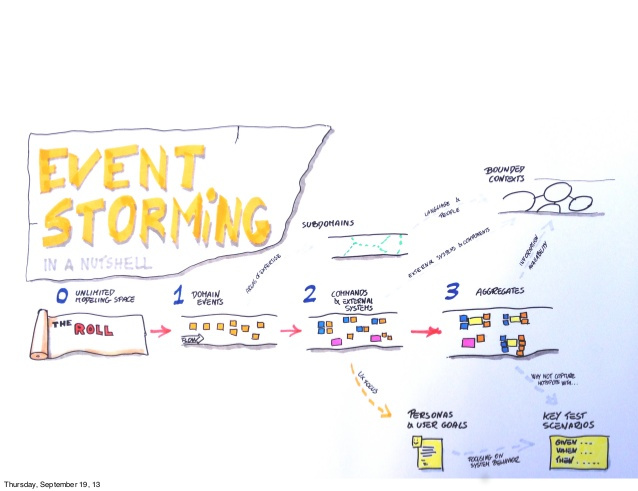
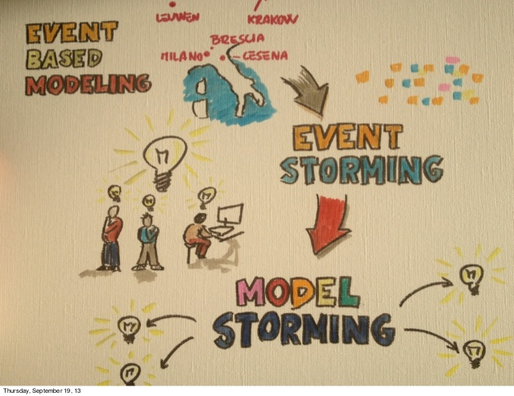

Domain Driven Design
NightClazz
Qui suis je ?
Khaled Souf
Vous êtes perdus ?

Posez des questions !

Sommaire
- Domain Driven Design c'est quoi ?
- Langage ubiquitaire
- pause Pizza
- Design Stratégique
- Design Tactique
Domain Driven Design
c'est quoi ?
Une méthode de conception logicielle qui favorise une conception proche de la réalité
Focalisation sur le métier (au lieu d’uniquement des parties techniques)
On utilise explicitement des noms et des verbes du domaine dans le code
La connaissance métier est le noyau de l’application
Langage ubiquitaire
- C'est quoi ?
- Par ou Commencer? (Impact Mapping)
- Comment le construire? (Event Storming)
- Modélisation
Langage ubiquitaire
- Programmers should speak the language of domain experts to avoid miscommunication, delays, and errors.
- To avoid mental translation between domain language and code, design your software to use the language of the domain.
-
Reflect in code how users of the softwarethink and speak about their work. One powerful approach is to create a domain model.
Impact Mapping
Impact Mapping

Impact Mapping
Drawing impact maps An impact map is a visualisation of scope and underlying assumptions, created collaboratively by senior technical and business people. It is a mind-map grown during a discussion facilitated by considering the following four aspects:
- Goal
- Actors
The centre of an impact map answers the most important question: Why are we doing this? This is the goal we are trying to achieve.
The first branch of an impact map provides answers to the following questions: Who can produce the desired effect? Who can obstruct it? Who are the consumers or users of our product? Who will be impacted by it? These are the actors who can influence the outcome.
Impact Mapping
- Impacts
- Deliverables
The second branch level of an impact map sets the actors in the perspective of our business goal. It answers the following questions: How should our actors’ behaviour change? How can they help us to achieve the goal? How can they obstruct or prevent us from succeeding? These are the impacts that we’re trying to create.
Once we have the first three questions answered, we can talk about scope. The third branch level of an impact map answers the following question: What can we do, as an organisation or a delivery team, to support the required impacts? These are the deliverables, software features and organisational activities.
Hands on !

Event Storming
Event Storming
Invite the right people to the workshop. Ideally you’ll want a large meeting room with 6..8 people, with the right mixture of the ones who know the questions to ask (and which are curious to listen to the answer) and the ones who know the answers. Provide unlimited modelling space. Too often complex problems are not properly analysed because there’s not enough space available to see the problem. Your problem is bigger than your whiteboard, so what? My solution is to hack the modelling space using whatever available (my favorite tool is an Ikea paper roll) to get rid of the space limitation. Explore the domain starting from Domain Events. A Domain Event is something meaningful happened in the domain. It can be easily translated into software, but the real value here is that it could be quickly grasped from non technical people. An event might be the predecessor of the follower of another one. Place all of them onto your modelling surface (the convention is to use orange stickies for this purpose) according to a timeline. Explore the origin of Domain Events. Some events are the direct consequence of a user action —> represent it as a Command using a blue sticky note. Others are the consequence of something happening in external systems or of the time passing, we’ll use a purple sticky note for them. In some other cases, we’ll have events that will be the direct consequence of some other events. We’ll simply place the two events close together. Look for Aggregates. Instead of defining aggregates starting from the code, we’re taking an outside-in approach: the Aggregate is the portion of the system that receives commands and decides whether to execute them or not, thus producing a domain event.
Event Storming
Modélisation
Les modèles décrivent certains aspects du domaine en donnant une description simplifiée (mais réaliste) de la réalité
Un modèle forme les bases d’un langage spécialisé pour un domaine
Les modèles sont crées et exploités par les différents acteurs de la chaîne logicielle. Ils constituent une activité de collaboration pour Communiquer
Faciliter l’exploration du métier
Gérer la complexité
Générer du code (de moins en moins)
Hands on !
Modélisation (Model Storming)
Pause Pizza
Design Stratégique
- Contextes bornés (Bounded Context)
- Mapping de context (Context Mapping)
Contextes bornés (Bounded Context)
Un BC est un contexte délimité par une frontière linguistique nette. A l'intérieur d'un BC, tous les concepts du modèle (noms et verbes) ont une signification spécifique, comprise et acceptée par tous les membres de l’équipe.
On détermine donc les limites d’application d’un modèle Les membres de l’équipe ont une vision précise des éléments qui doivent être consistants
Dans un BC, le modèle du domaine est exprimé par un Ubiquitous Language partagé par tous Un domaine métier peut contenir plusieurs BC, chaque BC définissant son Propre Language
Contextes bornés (Bounded Context): Avantages
Renforce la pureté et la puissance du modèle
Evite la confusion avec les autres contextes
Simplifie l’Architecture (Fait émerger des transitions explicites entre les différents contextes)
Favorise un partitionnement technique et organisationnel
Context Mapping
Processus de conception pour identifier les points de contact et les relations entre les différents modèles
On identifie les Bounded Context (BC) amont et aval, ce qui permet d’expliciter les rôles de chacun
On analyse les transformations nécessaires
Une relation entre deux équipes
L’équipe en amont (upstream)
L’équipe en aval (downstream)
shared kernel pattern
customer/supplier Development
confirmist
Anti Corruption Layer
Separate Ways
Hands on !
Design Tactique
- Domain Events
- Entity et Value Object
- Agrégats
- repositories et Factories
- services
Domain Events
Les Domain Event modélisent l'activité dans le domaine par une série d'événements discrets:
S'est produit dans le passé
Intéresse les experts métier
Un événement technique n'est pas un Domain Event
Fait partie de l'Ubiquitous language
Est instantané (sans durée) et atomique (insécable)
Contenu Domain Events
IDENTIFIANTS des entités impactées
DATE/HEURE de survenance
Le CONTEXTE avant et après l'événement Les CIRCONSTANCES de l'événement
NUMERO DE SERIE de l'événement (pour permettre à sa consammation d'être idempotente)
PAS DE COMPORTEMENT Les consommateurs décident comment tenir compte de l'événement
Value Object
Une valeur est intangible et immuable. Existence indépendante du temps et de l’espace. Qui ne change pas l’application ne change pas le cycle de vie de l’objet.
Quantité ou description immuable, regroupant en un tout cohérent un ensemble de valeurs primitives, avec un nom explicitant le sens de cet ensemble, et un comportement propre au nouveau concept ainsi introduit.
Contenu Value Object
MAGNITUDE et UNITE Conversion vers une autre unité
CONVERSION depuis/vers représentation textuelle
REGLES DE VALIDATION Appartenance à un intervalle, conformité à un format, ..
EGALITE: toujours Comparaison: parfois (attention à ne pas imposer un ordre naturel de tri là où il faudrait des ordres contextuels)
COMPORTEMENT propre au domaine
Entité
A l'instar d'une personne, certains objets sont intrinsèquement définis par la continuité de leur identité et non par leurs attributs (qui eux peuvent varier dans le temps).
Identité et état variable sont indissociables:
L'identité est le point d'ancrage qui permet un suivi continu de l'objet dans le temps.
Cette identité est incarnée par un ou plusieurs champs métier ou techniques, dont l'ensemble a la propriété d'unicité.
Entité
A l'instar d'une personne, certains objets sont intrinsèquement définis par la continuité de leur identité et non par leurs attributs (qui eux peuvent varier dans le temps).
Identité et état variable sont indissociables:
L'identité est le point d'ancrage qui permet un suivi continu de l'objet dans le temps.
Cette identité est incarnée par un ou plusieurs champs métier ou techniques, dont l'ensemble a la propriété d'unicité.
Agrégats
Un et un seul AGGREGATE ROOT point d'entrée unique de l'agrégat
Des ENTITES Quelques unes au maximum
Des VALUE OBJECTS sans limitation de nombre
Un (ou plusieurs) invariant
Racine d'agrégats
Un NUMERO DE VERSION garantissant la cohérence transactionnelle des invariants (verrouillage optimiste)
Des VALUE OBJECTS caractérisant son état (sans limitation de nombre)
Des VALUE OBJECTS Identités Sa propre identité, constante Les identités d'Aggregate Roots d'autres Agrégats
Les méthodes d'accès centralisé à l'état de l'Agrégat: Les COMMANDES de modification de l'Agrégat Les QUERIES de calcul d'un état agrégé
Des références vers des ENTITES Du même Agrégat: aussi peu que possible mais en préservant les invariants transactionnels D'autres Agrégats: aussi peu que possible, et en lecture seule
repositories
En lecture, le Repository permet de charger l'Aggregate Root, les autres entités de l'Agrégat ne peuvent être atteintes qu'en suivant les liens d'association.
En écriture, le Repository encapsule la création, la suppression et la modification d'un Agrégat sans exposer les Entités non-racine.
Les Repositories représentent un moyen d'accès à un ensemble d'objets BD Fichier Cache distribué
Ils donnent l'illusion d'une simple collection en mémoire Indépendant de la persistance Suit la sémantique des collections (ex: même comportement que add/remove)
Contenu d'un Repository
Des QUERIES génériques de type findByXXX, ...
Des USE CASE OPTIMAL QUERIES retournent une agrégation d'informations (typiquement complexe) spécifique à un cas d'utilisation
Des commandes ADD et REMOVE toujours explicites
Une commande UPDATE parfois Explicite avec les persistence-oriented Repositories Implicite avec les collection-oriented Repositories
DAO Vs Repository
factories
Si la création d'un Agrégat est complexe, encapsuler cette création dans une Factory (ou autre pattern de création)
Le contrat de la Factory est de produire un Agrégat complètement construit, satisfaisant tous ses invariants.
La Factory représente un création métier d'un agrégat purement Métier et peut se base sur d'autres patterns de création
Services
Application Service
Chaque use case va s’incarner par un Application Service Granularité plus épaisse
Utilisation d’une forme verbale (Verbe + Complément d’objet) Notion d’Action
La transaction métier est au niveau du use case
On ne compose pas les Application Service entre eux (pas auto-composable)
Chaque Application Service représente une granularité grosse: le use case
Contenu Application Service
Des méthodes correspondant à des use cases (avec la même granularité)
La déclaration des préoccupations d'un composant frontière Sécurité, démarcation transactionnelle, ..
La coordination (spécifique au use case) de ces composants
Pas d’état
Domain Service
Comporte des règles métier exprimées par la MOA Processus métier significatif
Ubiquitous language évoquant un service et non une Entité
Implémente un concept du domaine qu'il n'est pas naturel de mettre dans une Entité ou un Value Object
Comportement à cheval sur plusieurs Entités ex: transfert entre 2 comptes Transformation d'un graphe d'Entités en un autre graphe d'Entités...
Composition d'un Domain Service (DS) réutilisable de plus gros grain, à partir de DS de plus petit grain
Infrastructure Service
Il contient des éléments techniques, n’ayant pas pour objectif de représenter un concept métier (pas nécessairement compréhensible par la MOA)
Intégration
Technique de mapping
Communication extérieure
Hands on !